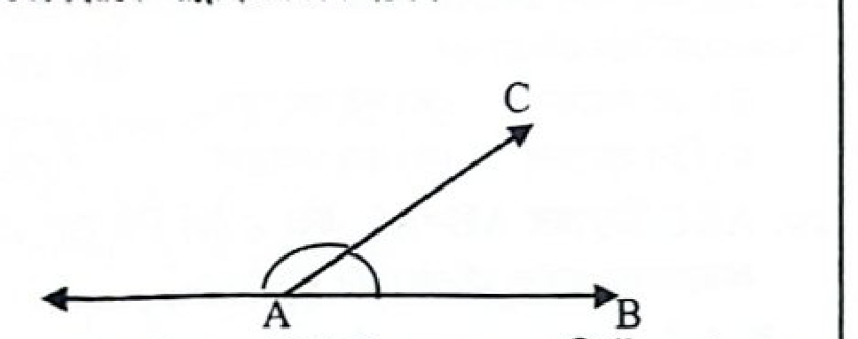

রেখা, কোণ ও প্রাথমিক আলোচনা
(Lines, Angles & Preliminary Discussion)
পিএসসি নন-ক্যাডার বিগত সালের বিভিন্ন মন্ত্রণালয় ও অধিদপ্তরের নিয়োগ পরীক্ষার প্রামাণ্য ৩৩টি প্রশ্ন, সঠিক উত্তর ও পূর্ণাঙ্গ ব্যাখ্যা।
📐
প্রামাণ্য ইন্টারেক্টিভ রিভিশন নোট ও সূত্রাবলি
📌 জ্যামিতির মৌলিক ধারণা ও মাত্রা
উপাদান
মাত্রা
বৈশিষ্ট্য
বিন্দু (Point)
০ (মাত্রাহীন)
শুধু অবস্থান আছে, দৈর্ঘ্য-প্রস্থ-উচ্চতা নেই
রেখা (Line)
১ মাত্রিক
শুধু দৈর্ঘ্য আছে, কোনো প্রান্তবিন্দু নেই
রেখাংশ (Segment)
১ মাত্রিক
নির্দিষ্ট দৈর্ঘ্য ও ২টি প্রান্তবিন্দু আছে
রশ্মি (Ray)
১ মাত্রিক
১টি প্রান্তবিন্দু আছে, অন্যদিকে অসীম
তল (Surface)
২ মাত্রিক
শুধু দৈর্ঘ্য ও প্রস্থ আছে, বেধ নেই
ঘনবস্তু (Solid)
৩ মাত্রিক
দৈর্ঘ্য, প্রস্থ ও উচ্চতা (বা বেধ) তিনটিই আছে
💡 মনে রাখুন: ৩টি সমরেখ বিন্দু দিয়ে কেবল ১টি সরলরেখা আঁকা যায়। দুটি সরলরেখা পরস্পর সমাপতিত হলে তাদের সাধারণ সমাধান সংখ্যা অসংখ্য।
📐 বিভিন্ন প্রকার কোণের শ্রেণিবিভাগ
কোণের নাম
ডিগ্রি পরিমাপ
পরীক্ষার উদাহরণ
সূক্ষ্মকোণ (Acute)
০° < কোণ < ৯০°
১৫°, ৩০°, ৪৫°, ৬০°, ৭৫°
সমকোণ (Right)
কোণ = ৯০°
এক সমকোণ = ৯০° বা π/২ রেডিয়ান
স্থূলকোণ (Obtuse)
৯০° < কোণ < ১৮০°
১০০°, ১২০°, ১৫০°, ১৭৫°
সরলকোণ (Straight)
কোণ = ১৮০°
দুই সমকোণ = ১৮০° বা π রেডিয়ান
প্রবৃদ্ধ কোণ (Reflex)
১৮০° < কোণ < ৩৬০°
১৮১°, ২৫৩°, ২৬০°, ৩০০°
⚡ পূরক ও সম্পূরক কোণ নির্ণয়ের গোল্ডেন সূত্রাবলি
পূরক কোণ (Complementary):
দুটি কোণের সমষ্টি = ৯০° (এক সমকোণ)
θ এর পূরক কোণ = (৯০° - θ)
সম্পূরক কোণ (Supplementary):
দুটি কোণের সমষ্টি = ১৮০° (দুই সমকোণ)
θ এর সম্পূরক কোণ = (১৮০° - θ)
বিপ্রতীপ কোণ (Vertically Opposite):
দুটি সরলরেখা পরস্পর ছেদ করলে উৎপন্ন বিপরীত কোণগুলো পরস্পর সমান হয়।
এক সরলরেখার সন্নিহিত কোণ:
একটি সরলরেখার সাথে রেখাংশ মিলিত হলে উৎপন্ন সন্নিহিত কোণদ্বয়ের সমষ্টি = ১৮০°।
স্কোর:০ / ৩৩
প্রশ্ন 01কর্মসংস্থান ও প্রশিক্ষণ ব্যুরো (ইন্সট্রাক্টর)-২২
কোনটি ত্রিমাত্রিক বস্তু?
সঠিক উত্তর: খ | বিশদ সমাধান:
ঘনক হলো একটি ত্রিমাত্রিক (Three-dimensional) বস্তু, যার দৈর্ঘ্য, প্রস্থ ও উচ্চতা (বা বেধ) তিনটি মাত্রাই বিদ্যমান। অন্যদিকে বিন্দুর কোনো মাত্রা নেই (মাত্রাহীন), রেখা একমাত্রিক (শুধু দৈর্ঘ্য আছে), এবং তল দ্বিমাত্রিক (দৈর্ঘ্য ও প্রস্থ আছে)।
প্রশ্ন 02পিএসসি (স্টাফ অফিসার)-২৩
দুইটি সরলরেখা পরস্পর সমাপতিত হলে সমাধান সংখ্যা কত?
সঠিক উত্তর: ঘ | বিশদ সমাধান:
দুইটি সরলরেখা পরস্পর সমাপতিত (Coincident) হলে তারা একটির ওপর আরেকটি সম্পূর্ণ মিলে যায়। অর্থাৎ তাদের প্রতিটি সাধারণ বিন্দুই একটি সমাধান। ফলে এদের সমাধান সংখ্যা হবে অসংখ্য (Infinitely many)।
প্রশ্ন 03স্থানীয় সরকার প্রকৌশল অধিদপ্তর (সহকারী প্রকৌশলী)-১৯
৩টি সমরেখ বিন্দু দ্বারা কয়টি সরলরেখা আঁকা যায়?
সঠিক উত্তর: ক | বিশদ সমাধান:
যেসব বিন্দু একই সরলরেখায় অবস্থান করে তাদেরকে সমরেখ বিন্দু (Collinear points) বলে। সুতরাং ৩টি সমরেখ বিন্দু দিয়ে কেবল ১টি মাত্র সরলরেখা আঁকা সম্ভব।
প্রশ্ন 04পিএসসি নন-ক্যাডার বিভিন্ন পদ
তল কয় মাত্রিক?
সঠিক উত্তর: খ | বিশদ সমাধান:
তলের (Surface) কেবল দৈর্ঘ্য ও প্রস্থ থাকে, কিন্তু কোনো উচ্চতা বা বেধ থাকে না। তাই তল হলো দ্বি-মাত্রিক (2-Dimensional)।
প্রশ্ন 05বিভিন্ন মন্ত্রণালয় ব্যক্তিগত কর্মকর্তা
দুটি সমান্তরাল রেখা কয়টি বিন্দুতে ছেদ করে?
সঠিক উত্তর: ঘ | বিশদ সমাধান:
একই সমতলে অবস্থিত দুটি সরলরেখা যদি পরস্পরকে কখনো ছেদ না করে এবং তাদের মধ্যবর্তী লম্ব দূরত্ব সর্বদা সমান থাকে, তবে তাদেরকে সমান্তরাল রেখা (Parallel lines) বলে। সমান্তরাল রেখা পরস্পরকে কোনো বিন্দুতেই ছেদ করে না। সুতরাং ছেদবিন্দুর সংখ্যা শূন্য (কোনোটিই নয়)।
প্রশ্ন 06বিভিন্ন মন্ত্রণালয় উপ-সহকারী প্রকৌশলী
সমকোণী ত্রিভুজের সূক্ষ্মকোণদ্বয়ের সম্পর্ক কি?
সঠিক উত্তর: ক | বিশদ সমাধান:
আমরা জানি ত্রিভুজের তিন কোণের সমষ্টি ১৮০°। সমকোণী ত্রিভুজের একটি কোণ সমকোণ (৯০°)। ফলে অপর দুটি সূক্ষ্মকোণের সমষ্টি হবে (১৮০° - ৯০°) = ৯০°। যেহেতু দুটি কোণের সমষ্টি ৯০° হলে তাদেরকে পরস্পরের পূরক কোণ (Complementary angles) বলে, তাই সূক্ষ্মকোণদ্বয় পরস্পরের পূরক।
প্রশ্ন 07বিভিন্ন মন্ত্রণালয় ব্যক্তিগত কর্মকর্তা-১৫
যে কোণের পরিমাণ ৯০° অপেক্ষা কম তাকে কি কোণ বলে?
সঠিক উত্তর: ক | বিশদ সমাধান:
০° অপেক্ষা বড় কিন্তু ৯০° (এক সমকোণ) অপেক্ষা ছোট কোণকে সূক্ষ্মকোণ (Acute angle) বলে। ৯০° এর সমান কোণকে সমকোণ, ৯০° অপেক্ষা বড় কিন্তু ১৮০° অপেক্ষা ছোট কোণকে স্থূলকোণ এবং ১৮০° অপেক্ষা বড় কিন্তু ৩৬০° অপেক্ষা ছোট কোণকে প্রবৃদ্ধ কোণ বলে।
প্রশ্ন 08পিএসসি নন-ক্যাডার সাধারণ
৯০° কোণের চেয়ে ছোট কোণকে কী কোণ বলা হয়?
সঠিক উত্তর: খ | বিশদ সমাধান:
এক সমকোণ বা ৯০° অপেক্ষা ছোট কোণকে সূক্ষ্মকোণ (Acute angle) বলে। (An angle which is less than a right angle is called an acute angle).
প্রশ্ন 09পিএসসি নন-ক্যাডার বিভিন্ন পরীক্ষা
সমকোণের চেয়ে ছোট কোণকে কি কোণ বলে?
সঠিক উত্তর: গ | বিশদ সমাধান:
সমকোণ (৯০°) অপেক্ষা ছোট কোণকে সূক্ষ্মকোণ বলা হয়। স্থূলকোণ হলো ৯০° অপেক্ষা বড় কিন্তু ১৮০° অপেক্ষা ছোট কোণ।
প্রশ্ন 10পিএসসি সহকারী প্রকৌশলী
৬০° কোণের পূরক কোণ কত?
সঠিক উত্তর: ক | বিশদ সমাধান:
দুটি কোণের সমষ্টি ৯০° হলে একটিকে অপরটির পূরক কোণ বলে। অতএব, ৬০° কোণের পূরক কোণ = ৯০° - ৬০° = ৩০°।
যে কোণের মান ৯০° বা সমকোণ অপেক্ষা বড় কিন্তু ১৮০° বা দুই সমকোণ অপেক্ষা ছোট, তাকে স্থূলকোণ (Obtuse angle) বলে। যেহেতু ৯০° < ১৫০° < ১৮০°, তাই ১৫০° কোণটি একটি স্থূলকোণ।
প্রশ্ন 12অর্থ মন্ত্রণালয়ের অধীন জাতীয় সঞ্চয় পরিদপ্তরের সহকারী পরিচালক ২০০৯
২৫৩° কোণকে কি কোণ বলে?
সঠিক উত্তর: ঘ | বিশদ সমাধান:
১৮০° (দুই সমকোণ) অপেক্ষা বড় কিন্তু ৩৬০° (চার সমকোণ) অপেক্ষা ছোট কোণকে প্রবৃদ্ধ কোণ (Reflex angle) বলে। যেহেতু ১৮০° < ২৫৩° < ৩৬০°, তাই ২৫৩° কোণটি একটি প্রবৃদ্ধ কোণ।
প্রশ্ন 13পাসপোর্ট ও ইমিগ্রেশন অধিদপ্তর (সহকারী পরিচালক)-০৭
দুটি কোণ পরস্পর সমান এবং এদের একটির বাহু অপরটির এক বাহুর সমান্তরাল। কোণ দুটির অপর বাহুদ্বয়ের মধ্যে সম্পর্ক কিরূপ?
সঠিক উত্তর: খ | বিশদ সমাধান:
দুটি কোণ পরস্পর সমান হলে এবং তাদের একটির বাহু অপরটির এক বাহুর সাথে সমান্তরাল হলে, কোণ দুটির অপর বাহুদ্বয়ও পরস্পর সমান্তরাল (Parallel) হবে।
প্রশ্ন 14পিএসসি (স্টাফ অফিসার)-২৩
২৬০° পরিমাপের কোণকে কি কোণ বলে?
সঠিক উত্তর: ক | বিশদ সমাধান:
১৮০ ডিগ্রি থেকে বড় মানের এবং ৩৬০ ডিগ্রি থেকে ছোট মানের কোণকে প্রবৃদ্ধ কোণ (Reflex angle) বলে। ২৬০° কোণটি ১৮০° অপেক্ষা বড় এবং ৩৬০° অপেক্ষা ছোট হওয়ায় এটি প্রবৃদ্ধ কোণ।
প্রশ্ন 15নার্সিং সেবা অধিদপ্তরের মিডওয়াইফ-১৭
180° এর চেয়ে বড় কিন্তু 360° এর চেয়ে ছোট কোণকে কি কোণ বলে?
সঠিক উত্তর: ক | বিশদ সমাধান:
180° এর চেয়ে বড় কিন্তু 360° এর চেয়ে ছোট কোণকে প্রবৃদ্ধ কোণ (Reflex angle) বলা হয়।
প্রশ্ন 16কর্মসংস্থান ও প্রশিক্ষণ ব্যুরো (ইন্সট্রাক্টর)-২২
একটি কোণের পরিমাপ ১৮১° হলে তাকে কি কোণ বলে?
সঠিক উত্তর: ঘ | বিশদ সমাধান:
এক সরলকোণ (১৮০°) অপেক্ষা বড় কিন্তু দুই সরলকোণ (৩৬০°) অপেক্ষা ছোট কোণকে প্রবৃদ্ধ কোণ বলে। ১৮১° কোণটি ১৮০° অপেক্ষা বড় হওয়ায় এটি প্রবৃদ্ধ কোণ।
কোনো কোণের সম্পূরক কোণ ১২০° হলে কোণটির পূরক কোণ কত?
সঠিক উত্তর: ক | বিশদ সমাধান:
যেহেতু কোণটির সম্পূরক কোণ ১২০°, তাই মূল কোণটির মান = ১৮০° - ১২০° = ৬০°। এখন, ৬০° কোণের পূরক কোণ = ৯০° - ৬০° = ৩০°।
প্রশ্ন 32পিএসসি নন-ক্যাডার সাধারণ
দুটি সরলরেখা পরস্পর ছেদ করলে যে চারটি কোণ উৎপন্ন হয় তাদের সমষ্টি কত?
সঠিক উত্তর: খ | বিশদ সমাধান:
দুটি সরলরেখা পরস্পর ছেদ করলে ছেদবিন্দুতে চারটি কোণ তৈরি হয়। একটি বিন্দুর চারপাশের মোট কোণ হলো চার সমকোণ বা ৩৬০°। সুতরাং চারটি কোণের সমষ্টি হবে ৩৬০°।
প্রশ্ন 33আনসার ও ভিডিপি অধিদপ্তর (সার্কেল অ্যাডজুট্যান্ট)-২০১০
একটি সরলরেখার সাথে আর একটি রেখাংশ মিলিত হয়ে যে দুটি সন্নিহিত কোণ তৈরি হয় তাদের সমষ্টি কত?
সঠিক উত্তর: ক | বিশদ সমাধান:

কোনো সরলরেখার একটি বিন্দুতে অপর একটি রেখাংশ মিলিত হলে যে দুটি সন্নিহিত কোণ উৎপন্ন হয়, তাদের সমষ্টি দুই সমকোণ বা ১৮০° (এক সরলকোণ) হয়। এটি জ্যামিতির একটি মৌলিক উপপাদ্য।